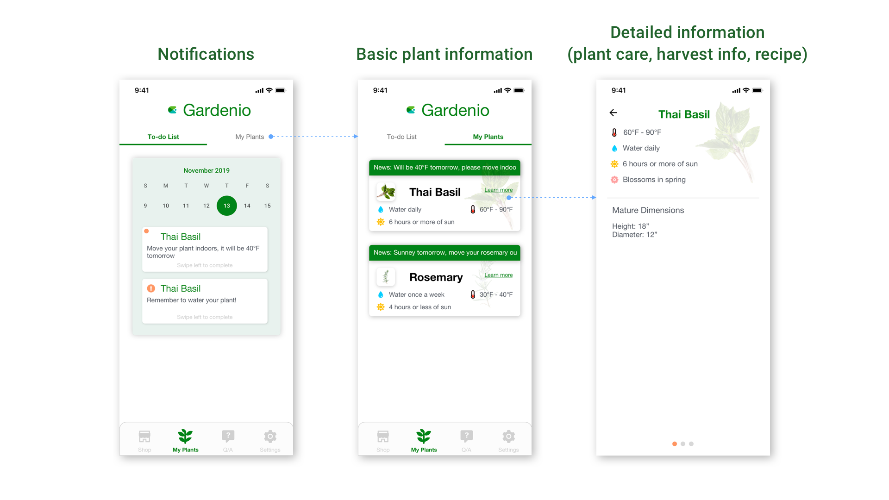

Gardenio: Mobile App Idea
Collaboration with Gardenio

Client Kickoff
The 3 biggest takeaways from the client kickoff with Gardenio's CEO:
- Want to attract people (younger generation) to become life-long gardeners by making it easy for them to get into gardening
- Build a community for gardeners to support novice gardeners
- Provide great experience to gardening
The Challenge:
How might we design a community that can attract expert gardeners?
Competitive Analysis
I started off with competitive analysis to understand how other competitors resolve their customer's problem.

Story Map
Business Model Canvas
I then had a question...is the focus on building a community or is it on supporting novice gardeners?
I came to a conclusion that Gardenio wants to support novice gardeners but don't have the funds to hired experts. A community can solve this problem since everyone can help each other out. Thus, I proceeded to create a Business Model Canvas to clarify how the community would work. How to attract "expert" gardeners is the problem I want to tackle.
Prototype
Translating insights into tangible ideas.
Shopping
Plant Care
Community
Key Features
Further Recommendations
In addition to the prototype, Gardenio can consider...
- Opening a physical store, as it would be easier to bring the community together
- The store in turn can hold events such as workshops, talks, etc.
- Collaborate with local schools.Schools can teach children about gardening, Gardenio can gain orders and reputation
Thoughts
What I can do better
In this project, I prioritized trying to solve the client's problem. If there were more time, I would conduct more research on the customer's side, which would include gardeners, nurseries, etc.
What I've learned
This is my first time incorporating animations into my design. Not only are animations the design trend in 2020, it can also make the prototype seem more interactive and engaging.